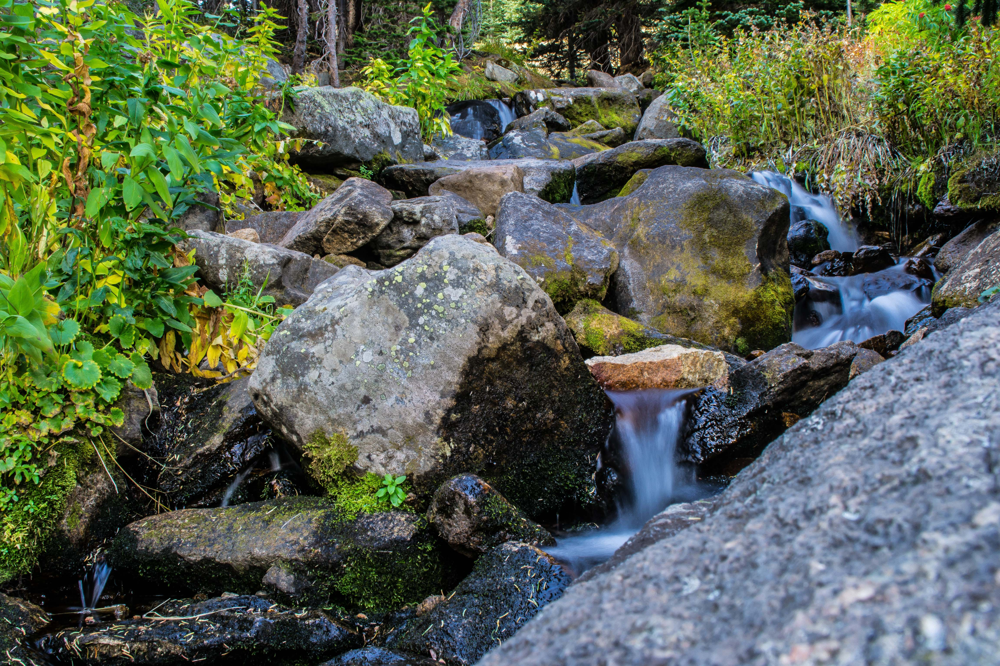
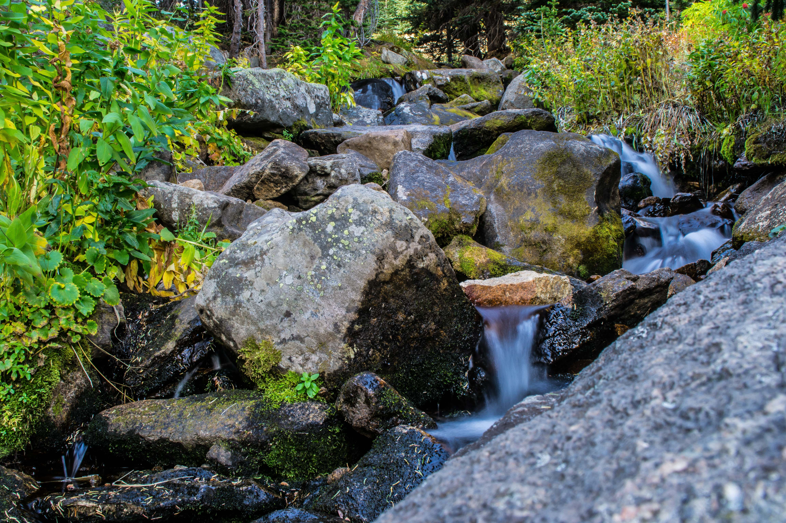

Rocky Mountain National Park is a United States national park located northwest of Denver in north-central Colorado, within the Front Range of the Rocky Mountains. The park is situated between the towns of Estes Park to the east and Grand Lake to the west. The eastern and westerns slopes of the Continental Divide run directly through the center of the park with the headwaters of the Colorado River located in the park's northwestern region. The park features mountains, lakes and a wide variety of wildlife within various climates and environments (from wooded forests to mountain tundra) along with easy access to back-country trails and campsites. The following Table shows a summary of the Park's most relevant characteristics.
| Criteria | Description |
|---|---|
| Surface: | 265,461 acres (414.783 sq mi; 107,428 ha; 1,074.28 sq km) |
| Main Campgrounds: | Glacier Basin; Longs Peak; Aspenglen; Timber Creek |
| Recommended Hikes: | Longs Peak; Mt. Ida; Esmerald Lake; Black Lake; Sky Pond |
| Wildlife: | American Black Bear; Elk; Mountain Lion; Beaver; Bighorn Sheep; Yellow-Bellied Marmot; Moose; Coyote |
The park has a total of five visitor centers. The park's headquarters are located at the Beaver Meadows Visitor Center which is a National Historic Landmark designed by the Frank Lloyd Wright School of Architecture at Taliesin West. National Forest lands surround the park including Roosevelt National Forest to the north and east, Routt National Forest to the north and west, and Arapaho National Forest to the west and south, with the Indian Peaks Wilderness area located directly south of the park.

 
